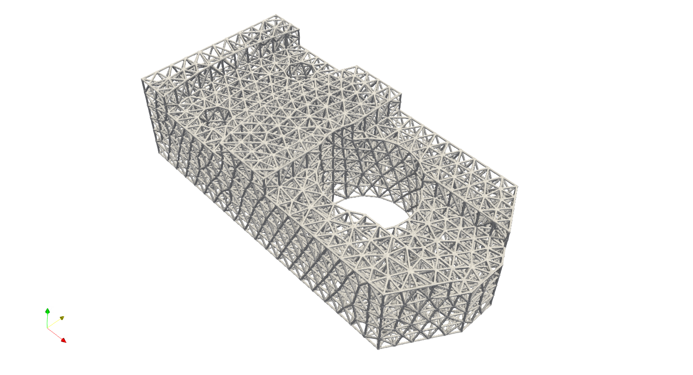
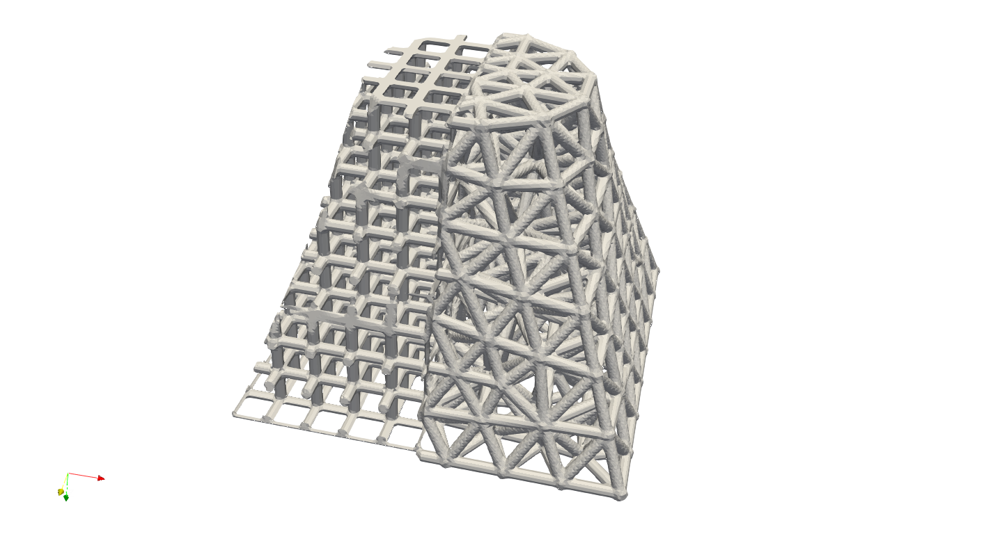

Mesh Lattice#
Users may wish to generate mesh-like conformal lattices. For instance, an STL model typically comprises numerous triangles that form the geometry; these triangular surfaces can be converted into a lattice structure. Using Artisan, this conversion process is straightforward if the user has the mesh file. Artisan supports the conversion of line, triangle, and tetrahedron elements. Similar to defining a customized lattice, we only need to change the parameter la_name to the path of the file that provides the mesh definition. For example, consider the following main JSON file that fills a part with a tetrahedron mesh. The mesh could be generated by an external mesher, such as Gmsh or Salome.
{"Setup":{ "Type" : "Geometry",
"Geomfile": ".//sample-obj//Parts01//Parts01.stl",
"Rot" : [0.0,0.0,0.0],
"res":[0.25,0.25,0.25],
"Padding": 2,
"onGPU": false,
"memorylimit": 16106127360
},
"WorkFlow":{
"1": {"Add_Lattice":{
"la_name": ".//Test_json//Parts01_Mesh_Infill_LR.mld",
"size": [4.0,4.0,4.0], "thk":0.3, "Rot":[0.0, 0.0, 0.0], "Trans":[0.0, 0.0, 0.0],
"Inv": false, "Fill": false,
"Cube_Request": {}
}
},
"2":{"Export": {"outfile": ".//Test_results/Parts01_Mesh_Infill.stl"}}
},
"PostProcess":{"CombineMeshes": true,
"RemovePartitionMeshFile": false,
"RemoveIsolatedParts": false,
"ExportLazPts": false}
}
You may notice that the value of the parameter Padding` has changed to 2, which differs from the value of 1 in previous examples. The term “padding” refers to the additional number of resolution grids surrounding the specified geometry domain, i.e., the bounding box. In this case, if we do not perform a fill operation, which trims the lattice using the shape of the geometry, we should consider adding padding grids to maintain the integrity of the boundary lattice. The lattice definition is linked to the file .//Test_json//Parts01_Mesh_Infill_LR.mld. The extension “mld” stands for mesh lattice definition, and this file specifies the mesh file.
{
"type": "MeshLattice",
"definition": {
"meshfile": ".//sample-obj//Parts01//Parts01.med",
}
}
As stated above, the mesh file points to .//sample-obj//Parts01//Parts01.med and type of filling is called MeshLattice. Artisan currently supports the following mesh file format:
File extension |
Original software |
Supporting element types |
|---|---|---|
|
Salome platform |
Beam, Tet, Hex, |
|
Ansys Mesh Export (Fluent Mesh Export Option) |
Beam, Tet |
|
Abaqus input file |
Beam, Tet, Hex |
|
Nastran |
Beam, Tet, Hex |
|
Geometry file format |
Triangle |
The result is shown below.
One notes that, the parameter of size in the keywords Add_Lattice influences the computing performance. Ideally, this parameter shall define approximated size of a single tetrahedron element. In the some cases of mixed size of elements, user may consider use the smallest element size. Bigger or smaller size definition could yield longer computational time.
User could certainly combine the mesh lattice with other types of lattice, such as periodic lattice. For example, the example below showed a simple combination of Cubic lattice and mesh lattice. Below is an example main JSON that combines the cubic lattice with mesh lattice. Other interpolation keywords, such as Lin_Interpolate and Attractor, are also supported.
{"Setup":{ "Type" : "Geometry",
"Geomfile": ".//sample-obj//Parts02//Parts02.stl",
"Rot" : [0.0,0.0,0.0],
"res":[0.8,0.8,0.8],
"Padding": 3,
"onGPU": false,
"memorylimit": 16106127360
},
"WorkFlow":{
"1": {"Add_Lattice":{
"la_name": "Cubic", "size": [10.0,10.0,10.0], "thk":1.5, "Rot":[0.0, 0.0, 0.0], "Trans":[0.0, 0.0, 0.0],
"Inv": false, "Fill": true, "Cube_Request": {}
}
},
"2" :{"HS_Interpolate" : {
"la_name": ".//Test_json//Parts02_Mesh_Infill_LR.mld",
"size": [4.0,4.0,4.0],
"thk": 1.5, "pt":[0.0,0.0,0.0],
"n_vec":[-1.0,0.0,0.0], "Fill": false, "Cube_Request": {}
}},
"3":{"Export": {"outfile": ".//Test_results/Parts02_Combined_Infill.stl"}}
},
"PostProcess":{"CombineMeshes": true,
"RemovePartitionMeshFile": false,
"RemoveIsolatedParts": true,
"ExportLazPts": false}
}
We have a half-half infill.
